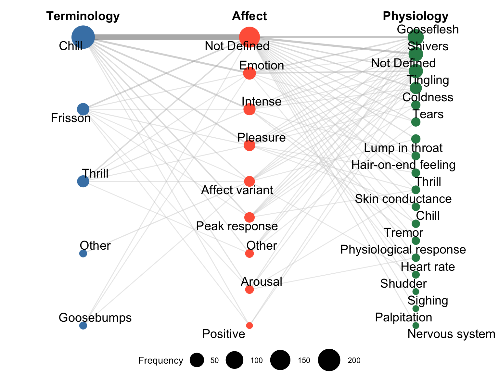

2 Chills terms - visualisations
3 Aim
Take the data directly from the google sheets (downloaded as excel sheet for offline processing,
Chills_Definitions.xlsx).Process the definitions into network visualisation to show a pattern between the terminology used, the affective characteristics, and the physiological characteristics.
3.1 Preliminaries
3.1.1 Load libraries
3.1.2 Read data
Show the code
d <- readxl::read_excel("data/Chills_Definitions.xlsx")
d$Year<-stringr::str_remove(d$Year, "\\.0$") # remove trailing .0 from years
d$Page<-stringr::str_remove(d$Page, "\\.0$") # remove trailing .0 from pages
print(knitr::kable(head(d,3)))| Source | Year | Page | Terminology | Definition From Source, Reference or Data | Definition | Affect | Physiology | Body Location |
|---|---|---|---|---|---|---|---|---|
| Ely | 1975 | NA | Horripilation | Source | NA | Unpleasant | Gooseflesh | NA |
| Panzarella | 1980 | 76 | Shivers | Source | NA | Motor-sensory ecstasy | Shivers | NA |
| Panzarella | 1980 | 76 | Chill | Source | NA | Motor-sensory ecstasy | Tingling | NA |
3.1.3 Recode definitions
- Collapse some rare terminology categories (such as “Chill(ing sound)” or “Tingling” or “Shivers”) into “Other”
- Collapse terms for affects.
- Collapse terms for physiology.
- Show amount of misssing data in each category.
Show the code
## 1. Terminologies simplified
d$Terminology <- recode(d$Terminology,
"Chill(ing sound)" = "Other",
"Horripilation" = "Other",
"Tingling" = "Other",
"Shivers" = "Other",
"Thrill / Chill" = "Thrill",
"Chill / Frisson Chill" = "Chill",
"Chill / Piloerection" = "Chill",
"Chill / Frisson" = "Frisson",
"Chill / Thrill" = "Thrill"
)
# also explictly code those rows that have NA in Terminology as "Not Defined" so they are included in the visualisations
d$Terminology[is.na(d$Terminology)]<- "Not Defined"
print(knitr::kable(as.data.frame(table(d$Terminology)), col.names = c("Terminology", "N")))| Terminology | N |
|---|---|
| Chill | 228 |
| Frisson | 29 |
| Goosebumps | 4 |
| Other | 4 |
| Thrill | 26 |
Show the code
## 2. Affect
d$Affect <- recode(d$Affect,
"Affective change" = "Affect variant",
"Aversive" = "Affect variant",
"Embodied" = "Other",
"Emotional" = "Affect variant",
"Excitement" = "Affect variant",
"Euphoric" = "Affect variant",
"Meaningful" = "Other",
"Merging with music" = "Other",
"Negative" = "Affect variant",
"Sexual arousal" = "Affect variant",
"Strong" = "Affect variant",
"Subjective" = "Other",
"Fear" = "Affect variant",
"Motor-sensory ecstasy" = "Affect variant",
"Unpleasant" = "Affect variant")
d$Affect[is.na(d$Affect)]<- "Not Defined"
print(knitr::kable(as.data.frame(table(d$Affect)), col.names = c("Affect", "N")))| Affect | N |
|---|---|
| Affect variant | 16 |
| Arousal | 6 |
| Emotion | 33 |
| Intense | 26 |
| Not Defined | 165 |
| Other | 6 |
| Peak response | 14 |
| Pleasure | 22 |
| Positive | 3 |
Show the code
| Physiology | N |
|---|---|
| Autonomic component | 1 |
| Blood volume pulse | 1 |
| Bodily rush | 1 |
| Body temperature | 2 |
| Chill | 5 |
| Coldness | 8 |
| Dry mouth | 1 |
| Frisson | 1 |
| Gooseflesh | 71 |
| Hair-on-end feeling | 6 |
| Heart rate | 5 |
| Lump in throat | 8 |
| Muscular tension | 1 |
| Nervous system | 3 |
| Non-thermoregulatory | 1 |
| Not Defined | 48 |
| Palpitation | 3 |
| Physiological response | 5 |
| Piloerection | 1 |
| Psychophysiological component | 1 |
| Respiration | 2 |
| Shivers | 52 |
| Shudder | 4 |
| Sighing | 3 |
| Skin conductance | 6 |
| Skin crawls | 1 |
| Stillness | 1 |
| Stomach feelings | 1 |
| Tears | 8 |
| Thrill | 6 |
| Tickling | 1 |
| Tingling | 26 |
| Trembling | 1 |
| Tremor | 5 |
| Warm sensation | 1 |
Show the code
| Body location | N |
|---|---|
| Arms | 7 |
| Back | 6 |
| Body | 9 |
| Head | 2 |
| Limbs | 2 |
| Neck | 18 |
| Not Defined | 199 |
| Other | 2 |
| Scalp | 6 |
| Shoulders | 2 |
| Spine | 38 |
Show the code
## Summarise not defined in each category
cat_summary <- data.frame(
Category = c("Terminology", "Affect", "Physiology", "Body Location"),
Not_Defined_pct = c(sum(d$Terminology == "Not Defined")/nrow(d),
sum(d$Affect == "Not Defined")/nrow(d),
sum(d$Physiology == "Not Defined")/nrow(d),
sum(d$Body_Location == "Not Defined")/nrow(d))
)
print(knitr::kable(cat_summary,digits=2))| Category | Not_Defined_pct |
|---|---|
| Terminology | 0.00 |
| Affect | 0.57 |
| Physiology | 0.16 |
| Body Location | 0.68 |
3.2 Visualise as network graph
Visualise the co-occurrence of Terminology, Affect, and Physiology using a network graph.
3.2.0.1 Principles:
- The order of the nodes is now determined by frequency within each category.
- There is a filter to remove rare terms (<3).
- “Not defined” is included as a node.
- Node positions can be made to be more organic, now rigid.
Show the code
library(igraph)
library(ggraph)
# Select the terms of interest:
terms <- dplyr::select(d, Terminology, Affect, Physiology)
terminology_terms <- terms %>% pull(Terminology) %>% unique()
node_freq <- bind_rows(
terms %>% select(term = Terminology),
terms %>% select(term = Affect),
terms %>% select(term = Physiology)
) %>%
filter(!is.na(term)) %>%
count(term)
freq_threshold <- 3 # find suitable threshold
# Make sure to keep terms that are related to the nodes, so make them unique here.
node_freq <- bind_rows(
terms %>% transmute(term = paste0(Terminology, " [T]")),
terms %>% transmute(term = paste0(Affect, " [A]")),
terms %>% transmute(term = paste0(Physiology, " [P]"))
) %>%
filter(!is.na(term)) %>%
count(term) %>%
filter(n >= freq_threshold) # drop rare terms
edges <- bind_rows(
terms %>% mutate(from = paste0(Terminology, " [T]"),
to = paste0(Affect, " [A]")) %>%
select(from, to),
terms %>% mutate(from = paste0(Affect, " [A]"),
to = paste0(Physiology, " [P]")) %>%
select(from, to)
) %>%
filter(!is.na(from), !is.na(to)) %>%
filter(from %in% node_freq$term, to %in% node_freq$term) %>% # drop edges to removed nodes
count(from, to, name = "weight")
g <- graph_from_data_frame(edges) %>%
tidygraph::as_tbl_graph() %>%
left_join(node_freq, by = c("name" = "term")) %>%
mutate(
column = case_when(
stringr::str_ends(name, "\\[T\\]") ~ "Terminology",
stringr::str_ends(name, "\\[A\\]") ~ "Affect",
stringr::str_ends(name, "\\[P\\]") ~ "Physiology"
),
# Strip the suffix for display
label = stringr::str_remove(name, " \\[.\\]$")
)
# Centred y coordinates: rank within group, then subtract the group mean
g <- g %>%
mutate(
x = case_when(
column == "Terminology" ~ 0,
column == "Affect" ~ 1,
column == "Physiology" ~ 2
),
y = {
ranks <- ave(seq_along(name), column, FUN = seq_along)
group_min <- ave(ranks, column, FUN = min)
group_max <- ave(ranks, column, FUN = max)
# Rescale to [-1, 1]; guard against single-node groups (max == min)
ifelse(
group_max == group_min,
0,
2 * (ranks - group_min) / (group_max - group_min) - 1
)
}
)
g <- g %>%
mutate(
x = case_when(
column == "Terminology" ~ 0,
column == "Affect" ~ 1,
column == "Physiology" ~ 2
)
) %>%
arrange(column, n) %>% # sort by frequency within group *was desc(n)
mutate(
y = {
ranks <- ave(seq_along(name), column, FUN = seq_along)
group_min <- ave(ranks, column, FUN = min)
group_max <- ave(ranks, column, FUN = max)
ifelse(
group_max == group_min,
0,
2 * (ranks - group_min) / (group_max - group_min) - 1
)
}
)
## Add labels
col_labels <- data.frame(
x = c(0, 1, 2),
y = rep(1.15, 3), # just above the top node at y = 1
label = c("Terminology", "Affect", "Physiology")
)
## Actual figure
fig1 <- g %>%
ggraph(layout = "manual", x = x, y = y) +
geom_edge_link(aes(width = weight,color=weight), alpha = 0.4) +
geom_node_point(aes(size = n, colour = column), alpha = 1.0) +
geom_node_text(aes(label = label), repel = TRUE, size = 5) +
scale_edge_colour_gradientn(colours = c("grey80", "grey50", "grey20"), values = c(0, 0.3, 1)) +
scale_x_continuous(expand = expansion(add = 0.5)) + # add padding left & right
scale_edge_width(range = c(0.5, 3)) +
geom_text(
data = col_labels,
aes(x = x, y = y, label = label),
inherit.aes = FALSE,
fontface = "bold",
size = 5
) +
scale_size_continuous(range = c(3, 12), name = "Frequency") +
scale_colour_manual(
values = c("Terms" = "steelblue",
"Affect" = "tomato",
"Physiology" = "seagreen"),
na.value = "steelblue"
) +
guides(
size = guide_legend(), # keep node size
colour = "none", # drop colour
edge_width = "none", # drop edge width
edge_colour = "none" # drop edge colour legend
) +
theme_void()+
theme(legend.position = "bottom")
print(fig1)